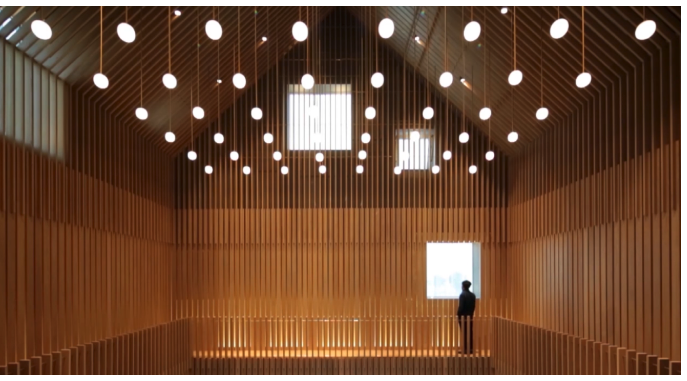

neri&hu

DEC 12 - DEC 20
4:30 - 7:00 pm in Williamsburg, NYC
Neri + Hu after travelling across the world, reside in their hometown
based in China. They are very careful in resisting the urge to fix the
flaws of projects they take on as every crack tell’s their audience a
story about the place. From the pictures you can notice that they
carefully exposed the raw structures with modern elements to elevate
the precious in old. Reminding us of what it is like to preserve the
ruin. Come visit their exhibit.
selected work

The Vertical Lane House
The original concrete building has been restored while new additions
built over the existing structure were made using Cor-Ten steel,
reflecting the industrial past of this working dock by the Huangpu
River.

Rethinking The Split House
Architecturally, the decorative elements added over the last 60 years
were stripped off, and large openings were created on the frontal
section to improve light qualities to the public spaces of each
apartment.